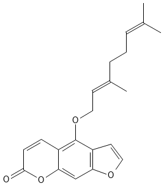
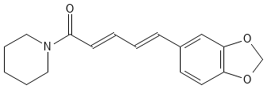

Phytochemical Database
This table is not an exhaustive list, nor for any medicinal/nutritional guidance.
The aim is to compile a list of some of the non-nutrient chemicals in our diet from plants (i.e. not the usual carbs, proteins, lipids etc.).
It is these chemicals that often impart flavour, colour and other interesting properties.
For some general notes on the topics see the general notes at the bottom of the page.
| EntryID | Vulgar Name | CAS | Reference Plant | Plant Location | Chemical Type | Structure | Culinary Notes | Medicinal Notes | ADME Notes | Other Notes | References |
|---|---|---|---|---|---|---|---|---|---|---|---|
| Fruits | |||||||||||
| 1 | Bergamottin | 7380-40-7 | Bergamot Orange (tree) | Mediterranean | Furanocoumarin |  | Essential oils containing bergamottin are used to flavour Earl Grey tea | Potentially phototoxic. The same family of chemicals in grapefruits (and other citrus to an extent) that inhibit CYP3A4 (see below). | Inhibitor of P450 enzymes. Similar fruits like grapefruits recommended to avoid during use of drugs dependent on P450 metabolism. | Used as a fragrance. | Ref1-1 |
| Vegetables | |||||||||||
| Nuts | |||||||||||
| Herbs | |||||||||||
| Spices | |||||||||||
| 2 | Piperine | 94-62-2 | Pepper plant (woody vine) | S/SE Asia | Alkaloid |  | Ancient spice praised for its heat, historically expensive and a central product in the spice trade from Asia and Europe. Black and white pepper are from the same plant, but black pepper is ground after boiling, drying and grinding the entire unripe 'drupe' (flesh and seed), while white pepper is the ground seed after extraction from the mature drupe. | Beyond traditional medicine, piperine appears to have no direct applications (though it is a key chemical building block and has various avenues of medical research). | Piperine appears to have complex ADME, though its high hydrophobicity appears to allow for passove absorpion. Studies have shown it inhibits MAO-A and B (potential neurological effects) and P450 enzymes 3A and 2D6. | The nitrogenous ring on its own is called piperidine. The carboxylic acid separated from piperidine is called piperic acid. Piperidine is a regulated chemical as it can be used as a building block for many pharmaceuticals and illicit drugs (e.g. "Angel Dust"). |
Medicinal review, 2022: Ref2-1 ADME review of oral PK, 2021: Ref2-2 MAO-A/B inhibition (reverisble), 2005: Ref2-3 P450 inhibition (mechanism-based), 2020: Ref2-4 |
| EMPTY | EMPTY | EMPTY | EMPTY | EMPTY | EMPTY | EMPTY | EMPTY | EMPTY | EMPTY | EMPTY | |
General Notes
Alkaloids - general term for compounds with at least a nitrogen, often basic. Not a particularly robust classification by chemistry or biochemistry.
References
- Ref1-1 - Ko JH, Arfuso F, Sethi G, Ahn KS. Pharmacological Utilization of Bergamottin, Derived from Grapefruits, in Cancer Prevention and Therapy. Int J Mol Sci. 2018 Dec 14;19(12):4048. doi: 10.3390/ijms19124048. PMID: 30558157; PMCID: PMC6321104.
- Ref2-1 - Imran M, Samal M, Qadir A, Ali A, Mir SR. A critical review on the extraction and pharmacotherapeutic activity of piperine. Polim Med. 2022 Jan-Jun;52(1):31-36. doi: 10.17219/pim/145512. PMID: 35196422.
- Ref2-2 - Ziegenhagen R, Heimberg K, Lampen A, Hirsch-Ernst KI. Safety Aspects of the Use of Isolated Piperine Ingested as a Bolus. Foods. 2021 Sep 8;10(9):2121. doi: 10.3390/foods10092121. PMID: 34574230; PMCID: PMC8467119.
- Ref2-3 - Lee SA, Hong SS, Han XH, Hwang JS, Oh GJ, Lee KS, Lee MK, Hwang BY, Ro JS. Piperine from the fruits of Piper longum with inhibitory effect on monoamine oxidase and antidepressant-like activity. Chem Pharm Bull (Tokyo). 2005 Jul;53(7):832-5. doi: 10.1248/cpb.53.832. PMID: 15997146.
- Ref2-4 - Cui T, Wang Q, Tian X, Zhang K, Peng Y, Zheng J. Piperine Is a Mechanism-Based Inactivator of CYP3A. Drug Metab Dispos. 2020 Feb;48(2):123-134. doi: 10.1124/dmd.119.088955. Epub 2019 Nov 20. PMID: 31748224.
- RefEXAMPLE - EXAMPLE
Notes and Credits: this is a hobby so I will not be devoutly referencing every fact (a lot come from wikipiedia/Google!)
Credit to PubChem for generating structures for free here: Pubchem Sketcher.
Perhaps one day we will use such a list of chemicals to explore and understand the ADME-Tox landscape of humans without dangerous synthetics and even use them for diagnostics...
...that, and seasoning stews of course!